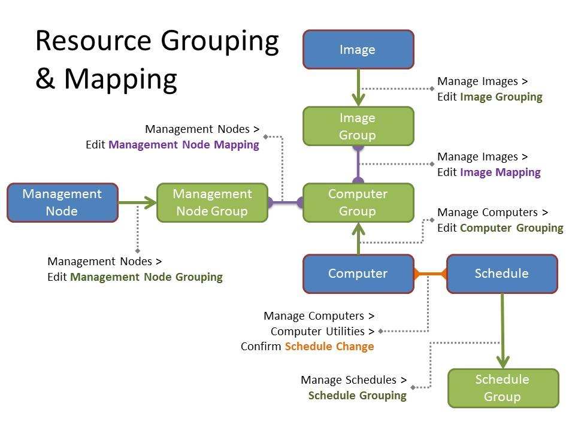

There are several concepts you need to understand when administering VCL.
VCL manages sets of resources. There are four types of resources: images, computers, management nodes, and schedules. Each of these resources types are described below.
An image is a collection of software that is installed on an operating system. For the most part, these images can be deployed, used, modified, and saved (captured). However, there are some cases where only some of the operations could be preformed on an image. For example, an image could exist that could be deployed and used, but not saved, or another image may exist that can have access to it brokered by VCL, but it cannot be deployed or saved. VCL provides a way to assign other images to be “subimages” of an image to create an environment (or cluster). Images can be designed to run directly on a computer (bare metal) or under a hypervisor (virtualized images). Currently, VCL uses xCAT as the provisioning engine to manage bare metal images. Various versions of VMWare can be used to provision virtualized images. The VCL backend code (vcld) is structured in a modularized way such that it is easy to add support for other provisioning technologies. We plan on adding support for other hypervisor technologies in the near future.
Images are deployed on to computers. VCL needs to know about all of the computers it will be managing. Entries for both physical computers and Virtual Machines (some people call these “slots”) need to be created in VCL for it to be able to manage them.
Management nodes run the VCL backend code (vcld) that is responsible for deploying images to computers when users make reservations for images. Each management node can manage a mix of physical and virtual computers.
Each computer must have a schedule associated with it. Schedules provide a way to define what times during a week a computer is available through VCL. This allows for computers to be managed by another system during certain parts of a week. For example, computers in a traditional university computing lab may be available through VCL when the lab is physically closed, but you wouldn’t want to be assigning remote users to those computers when the lab is open.
Users and resources are placed into groups to make management of them easier.
There are two types of user groups in VCL: those whose membership is manually managed through the web frontend or XML RPC API, and those whose membership is automatically managed by mirroring user groups in an LDAP system. Each user group has certain attributes associated with it. There are various places within VCL that user groups can be used, with the primary place being granting access to resources in the privilege tree.
Each resource group has a type associated with it which can be one of image, computer, management node, or schedule. The resource groups are used to grant users access to resources and also to allow VCL to know which resources can be used in relation to other resources. One example of this is to configure which images can be deployed to which computers. Another example is which management nodes can manage which computers.
VCL needs to know how resources related to one another. This is done by adding the resources to a resource group, and then mapping one type of resource group to another.
Resource groups can contain any number of resources. Each resource group has a resource type associated with it. Only resources matching that type can be added to the group. Also, it is important to note that when working with computers, physical and virtual computers should not be combined into the same group which could result in VCL trying to assign a physical image to a virtual computer or vice versa. Some upcoming changes to the code will remove this restriction, but for now, keep this restriction in mind while grouping computers.
After you have grouped your resources, you need to map them together. Image groups are mapped to computer groups, and management node groups are mapped to computer groups. Schedule groups are not mapped to anything (instead, every computer is directly assigned a schedule).
Any image in an image group can be run on any computer in a computer group to which it is mapped (provided a user has sufficient privileges to do so). There are a few things this allows you to do. If you have incompatible hardware, you would create separate computer groups for each type. Then, you would have image groups corresponding to each type so that you don’t end up with VCL trying to deploy images from one type of hardware to an incompatible type of hardware. Another thing you can do with the mapping is to partition off parts of your hardware. For example, if you had a set of users purchase their own hardware to be managed by VCL, you could map only their image groups to their computer groups.
Resource Grouping and Mapping are illustrated by the following diagram. The blue boxes represent resources. The green boxes represent resource groups. Arrows between blue and green boxes show where grouping occurs. Purple barbells represent resource mapping. The special case of assigning a schedule to a computer is represented by an orange barbell between the blue computer and schedule boxes.

Users are granted access to parts of the VCL web site and to resources through the Privilege tree. User permissions and resource attributes can both be cascaded down from one node to all of its children. Additionally, cascaded user permissions and resource attributes can be blocked at a node so that they do not cascade down to that node or any of its children.
There are 11 user permissions that can be granted to users. They can be granted to users directly or to user groups.
There are four resource attributes that can be assigned to a resource group at any node in the privilege tree.